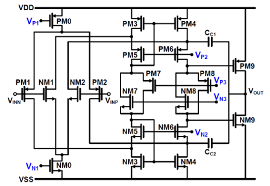
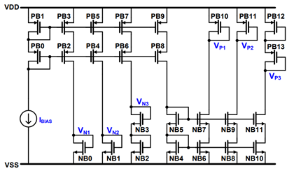
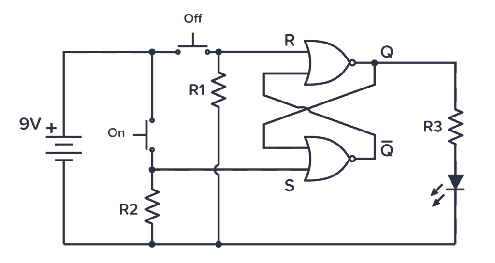
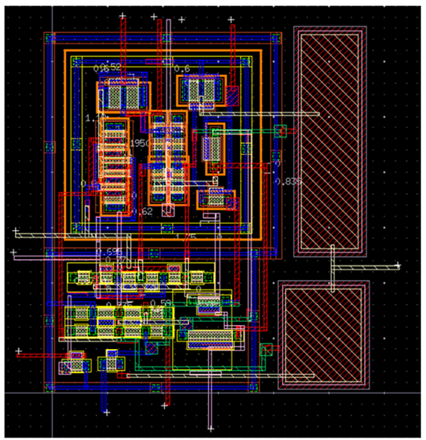
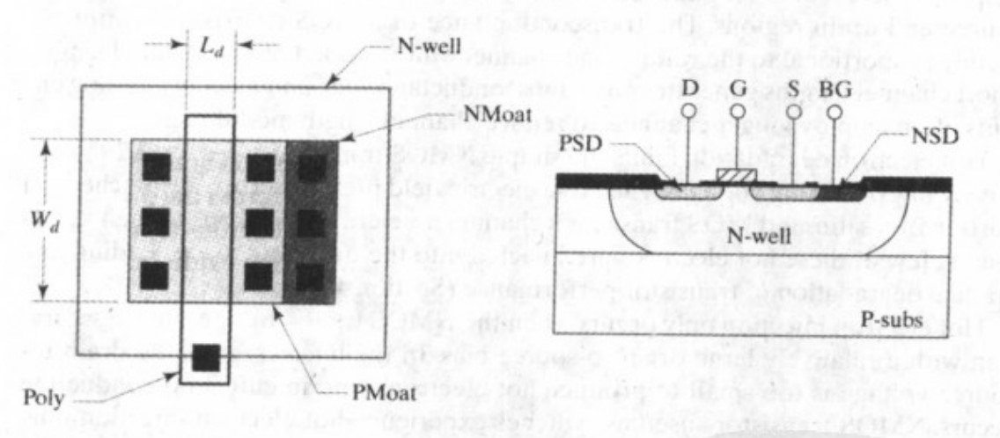
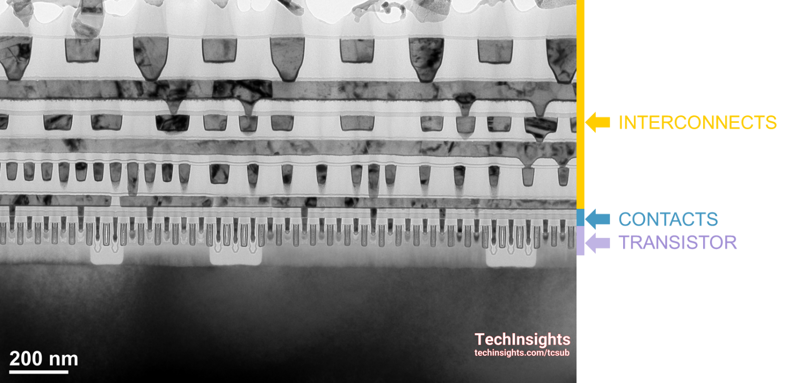
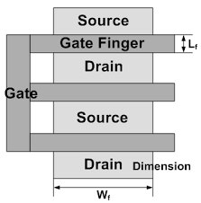
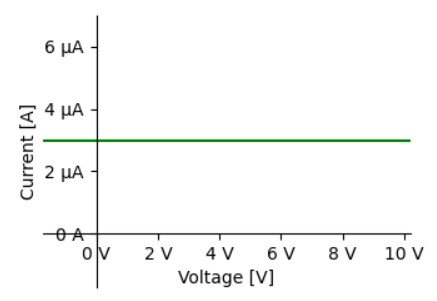
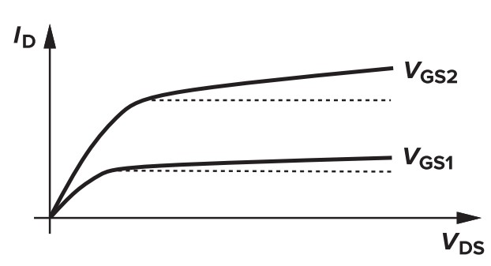
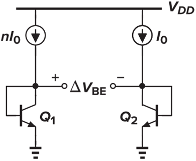

첫째로, 이번 학기에 제가 어떤 연구를 했는지에 대해서 알려주고자 해요. 하지만 대부분이 여기에 설명하기엔 너무 길고 복잡한 내용이기 때문에 간략한 설명만 하고 지나갈께요.
두번째로, 졸업연구를 위해 회로 설계 공부를 한 내용 중에 학부 1~3학년 과정에서는 나오지 않으면서도 쉽게 이해할 수 있을 거라 생각하는 내용 몇 개를 골라 간략하게 설명하도록 할께요. 이 문서를 보는 분들이 조금이라도 무언가를 얻도록 하기 위해서 추가했어요.
OPAMP의 설계 연구를 진행했습니다. OPAMP는 회로 수업을 들은 사람들은 다음과 같은 형태로 접해봤을 것이라 예상하는데요...
'OPAMP'라는 단일 소자는 존재하지 않습니다. 웨이퍼 위에 만들 수 있는 단위 회로 소자는 MOSFET, BJT, resistor, capacitor, diode 그리고 자주 쓰이지는 않지만 inductor 등이 있어요. 이러한 소자들을 잘 조합해서 OPAMP를 만들어야 하죠. 제가 만든 OPAMP는 다음과 같이 생겼어요.

다소 복잡하지만 어쨌든 이러한 구조를 사용하면 꽤 성능 좋은 OPAMP를 만들 수 있어요. 회로를 보면 Vp1, Vp2 같은 전압 포인트가 있는데, 이 전압은 위에 있는 회로에서 자동으로 생기는 전압이 아니라 따로 만들어줘야 하는 전압이에요. 이 말은 즉슨, 위에 있는 회로만으로는 OPAMP가 동작을 하지 않는 다는 거죠. 트랜지스터를 이용해서 이 전압을 만들어 줄 수 있어요. 이런 회로를 biasing circuit이라고 하는데, 이렇게 생겼어요.

회로 공부를 해본 사람들은 diode-connected 된 transistor에 current를 걸어주면 transistor의 $V_{gs}$로 거기에 해당하는 전압이 만들어진 다는 것을 알고 있을거에요. 거기에 current mirror를 추가해서 만드는 회로입니다. 나중에 공부해보면 딱히 어려운 내용은 아니에요.
여기서 언급하고 싶은 내용은 그림에 $I_{BIAS}$라고 그려진 current source가 있다는 거. 위에서 언급했지만 이 역할을 해주는 단일 회로 소자는 없어요. 즉, 이것도 회로를 구성해서 구현해줘야 합니다. 이상적인 current source를 만드는 방법을 뒤쪽의 읽을 거리에 간단하게 설명해놨습니다.
졸업 연구의 전체 내용을 세부적으로 담은 레포트 파일도 있으니 만약 관심있으면 함 보시길 바랍니다.
우리는 보통 이런 회로를 많이 봐왔죠.

제가 하고 싶은 말은... 이건 추상적인 레벨에서의 회로라는 거에요. 종이 위에 연필로 회로를 그린다고 동작하지는 않죠..? 말장난 하는게 아니라 실제로는 각 소자에 대응하는 소자를 wafer에 그리거나, 하다 못해 브레드보드 위에 소자를 꽂아서 구현해야 겠습니다.
그런데 위 그림에 NOR gate가 그려져 있는데 이는 CMOS 공정에서는 transistor로 구현할 수 있어요. 이렇게 생겼죠.

추상화 단계가 schematic 단계에서 transistor 단계로 내려왔다고도 볼 수 있겠죠. 여기까지 내려왔지만 아직 추상화 단계를 더 내려갈 수 있어요. 실제 wafer 위에 transistor와 wire의 배치도를 그려야 합니다. 이 배치도를 layout이라고 합니다.

이건 NOR gate는 아니고 제가 만든 opamp layout인데, transistor level까지 회로도는 볼만 했는데 여기부터는 이게 뭔가 싶지 않나요... 조금 보기 힘드니까 layout 단계에서는 걍 단일 소자를 하나하나 자세히 보도록 해봅시다. 위 사진은 실제 현장에서 쓰이는 Cadence사의 Virtuoso 프로그램에서 그린 layout인데 일단 차근차근 알아가는 과정이니 교과서에 나오는 그림으로 공부하는 게 좋을 거 같네요.

오른쪽 그림과 왼쪽 그림은 동일한 transistor이고요, 왼쪽은 transistor를 위에서 본 것이고 오른쪽은 단면도라고 보시면 됩니다. Poly라고 그려진 직사각형 부분이 transistor의 gate에 해당됩니다. Poly에 전압이 걸리면 전압 크기에 따라서 오른쪽 그림의 D와 S 사이에 전하가 흐를 수 있는 channel이 생겼다가 없어졌다가 하게 됩니다. (Poly는 resistance는 높지만 거의 전류가 흐르지 않으니 Poly 직사각형 모든 부분의 전압 level이 같다고 보면 돼요.) 이 사실을 상기해보면 $L_d$라고 표현된 값이 transistor의 길이에 해당되고 $W_d$라고 표현된 값이 transistor의 너비에 해당된다는 것을 이해할 수 있습니다. 잠깐 혼자 생각해보면 금방 이해할 수 있을거에요. (Poly 말고 metal을 써도 되는데 그건 주어진 공정에 따라 다릅니다.)
작고 검은 정사각형은 contact이라고 부르는 애들이에요. Transistor를 만들었으면 다른 애들이랑 wire로 연결시켜줘야 하니까 전류가 흐를 수 있는 통로를 뚫어주는 거라고 생각하면 됩니다. 통로를 뚫어주는 이유는 wire가 공중에 떠있기 때문이에요.(사실 공중은 아니고 oxide의 바다(?)에 떠있습니다)

위 그림처럼 맨 아래에 transistor를 만들고 위쪽의 여러 층에서 wire를 연결시키는 형태를 띕니다. 1층 wire layer와 0층 간의 연결을 contact라고 보면 되겠네요. 참고로 0층과 1층이 아닌 wire layer 간의 연결은 contact라고 부르지 않고 via라고 불러요. 검은색이 아니라 하얀 부분은 모두 silicon oxide 일 겁니다. 빈 공간을 oxide로 안 채워넣으면 반도체에 충격이 가해졌을 때 wire들이 부러질테니 비워둘 수는 없겠죠. 잘은 모르지만 공정 상으로도 빈 공간에 oxide를 채워넣지 않으면 위쪽 wire를 만들 수가 없을 겁니다.
위에 그림은 아마 이 전에도 몇 번 접해봤을 법한 정석(?)적인 트랜지스터의 형태에요. 여러가지 이유 때문에 위 그림과는 다른 형태로 그리기도 합니다. 아래 그림을 한 번 봅시다.

얼핏 보면 트랜지스터 여러 개가 있는 거라고 생각할 수도 있어요. 하지만 이 그림은 하나의 트랜지스터를 표현하고 있습니다. 그림을 보면 transistor의 terminal이 source 혹은 drain으로 분류되어 있는 것을 볼 수 있는데 source는 source끼리, drain은 drain끼리 wire로 연결시켜야 하나의 transistor가 되는 겁니다. 이 때 이 transistor의 width는 $W_f$의 3배인 $3W_f$에요. 위쪽 drain은 위, 아래 source로 모두 전류를 흘려줄 수 있고 아래쪽 drain은 위쪽 source로 전류를 흘려줄 수 있으니 그만큼 전류가 흐를 수 있는 통로가 넓어진 것 이라 생각하면 돼요. 이 부분이 이해가 잘 가지 않을 수 있지만 제 설명 능력이 부족해서 이렇게 밖에 말을 못하겠군요. 어쨌든 이렇게 transistor를 만들면 gate가 손가락처럼 나눠진다고 해서 각각 나눠진 gate를 finger라고 부릅니다.
여기까지 읽었으면 위쪽에 OPAMP layout에 뭐가 그려져 있는 건지 대충은 보일 것이라 생각합니다. 참고로 OPAMP layout에서 오른쪽에 있는 딥따 큰(deep dark) 직사각형은 capacitor입니다. Transistor에 비해 capacitor가 이렇게 크기 때문에 최대한 capacitor는 되도록 쓰지 않거나 크기를 작게 하는 방향으로 회로를 설계해야 한다는 말이 나오는 거에요. 그리고 보통 resistor가 capacitor보다 더 큽니다. 그러니 resistor는 꼭 필요할 때만 쓰는 게 좋아요.
Current source는 정의상 양단에 무슨 전압이 걸리더라도 일정한 전류를 흘려주는 회로 소자에요.

이거랑 비슷한 형태를 띄는 단일 회로 소자가 하나 있긴 있습니다.

트랜지스터의 current, voltage plot인데요. 오른쪽 부분만 보면 전압 변화에 따라서 전류 그리 크진 않으니 current source로 쓸 수 있을 거 같지 않나요? 하지만 한계가 많이 있어요.
일단 첫째로, 위 그래프만 봐도 ideal하지도, ideal에 가깝지도 않다는 것 입니다. Transistor 크기가 점점 작아질수록 그래프는 더 기울어지게 됩니다. 점점 current source로써의 성능이 떨어진다는 이야기입니다. 두번째로, transistor는 온도 변화에 민감합니다. 온도가 변하면 current가 휙휙 바뀌어요... 생각보다 많이 바뀝니다. 이것도 고려해줘야 합니다. 그 외에 공정 변수, 공급 전압(supply voltage) 변화에 의한 효과도 고려해보면 transistor는 ideal current source로 쓰기에는 심히 부적절합니다.
사실 위에 나온 대부분의 것들은 회로 구조나 layout을 잘 해서 커버칠 수 있는데, 온도의 변화에 대응하는 것이 가장 큰 문제입니다. 그런데 옛날 옛적 어느 공학자가 이를 해결할 방법을 찾아내게 되었습니다.
BJT를 이용하게 됩니다. 이를 이용해서 온도 변화에 둔감한 전압을 만들 수 있습니다. Key point는 BJT에서 만들어지는 어떤 전압은 온도에 따라 감소하는 경향을 띄는데, BJT 간에 생기는 전압 차이는 온도에 따라 증가하는 경향을 띈다는 것입니다. 이를 적절하게 섞으면 온도에 따라서 변하지 않는 전압을 만들어줄 수 있다는 겁니다.
수식으로 보자면, BJT의 $V_{BE}$의 온도에 대한 미분은 다음과 같습니다.
$\partial V{BE}/\partial T=\frac{V{BE}-(4+m)V_{T}-E_g/q}{T}$
$m$은 BJT마다 다른 값인데 $-3/2$정도 합니다. $q$는 전자의 전하량, $Eg$는 silicon의 bandgap energy입니다. 따라서 $V{BE}$를 잘 선택하면 저 값을 0보다 작게 만들 수 있겠죠. 예를 들면 $-1.5{mV}/{K}$ 같은 값을 가지도록 할 수 있습니다.

하지만 두 BJT 간의 $V_{BE}$ 차이의 온도에 대한 미분은 다음과 같습니다.
$\partial \Delta V_{BE}/\partial T=\frac{k}{q}\ln{n}$
n은 BJT 간의 전류 차이입니다. 요거는 $n$을 조금만 키워주면 0보다 큰 값을 가진 다는 것을 알 수 있습니다.
이 두 가지를 섞어서 만드는 회로가 bandgap reference 회로입니다. 회로를 완성하고 수식을 살펴보면 silicon의 bandgap energy는 온도에 따라 바뀌지 않는다는 사실을 활용하는 꼴이 되기 때문에 bandgap reference라고 부릅니다.
이렇게 온도에 따라 변하지 않는 전압을 만들고 이를 resistor에 걸어주면 됩니다. 전압이 일정하니 resistor에 흐르는 전류도 일정합니다. 회로에서 reference를 만드는 과정은 대략 이런 식으로 흘러간다고 보시면 됩니다.